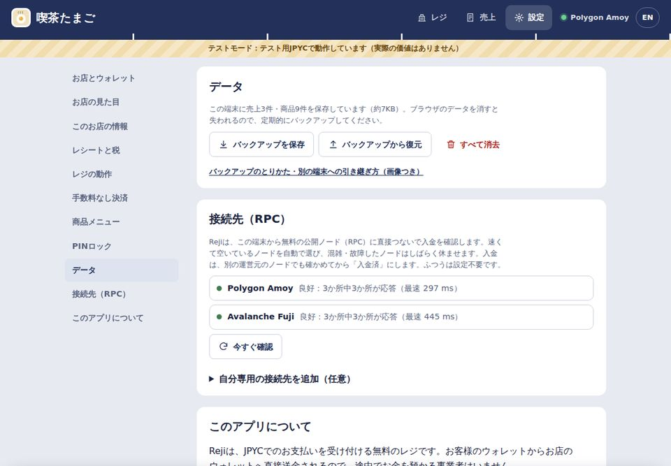
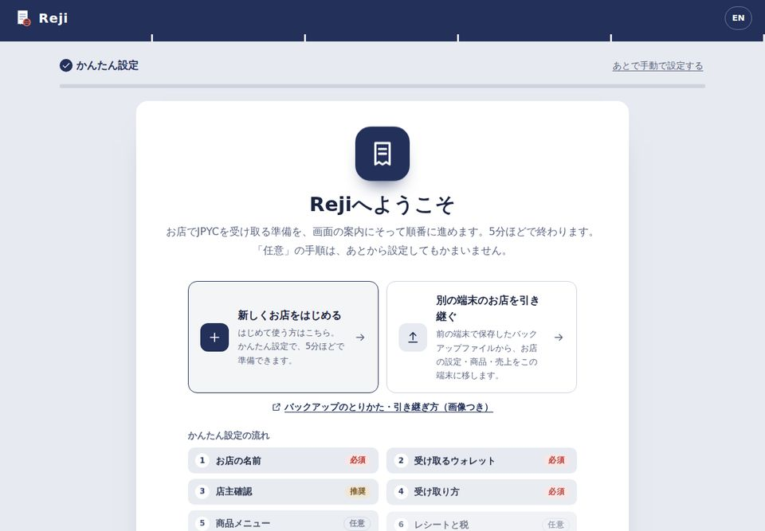
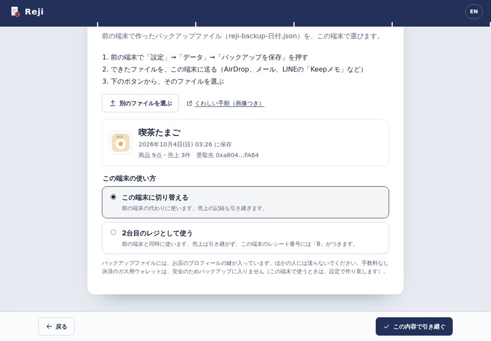

お店のバックアップと、別の端末への引き継ぎ
最終更新日：2026年10月7日
Rejiのお店のデータ（設定・商品・売上）は、運営者のサーバーではなく、お店の端末の中に保存されています。端末を買い替えるとき、2台目のレジを使うとき、故障や紛失に備えるときは、バックアップファイルを使います。
1. いまの端末で、バックアップを保存する
- Rejiのレジを開き、上の「設定」を押します。
- 設定の項目から「データ」を押します。
- 「バックアップを保存」を押すと、
reji-backup-日付.jsonというファイルができます（iPhone・iPadは「ファイル」アプリの「ダウンロード」、Androidやパソコンは「ダウンロード」フォルダ）。

週に1回くらい保存しておくと安心です。最後に保存した日時は「設定」→「このお店の情報」で確かめられます。
2. ファイルを、新しい端末に送る
- iPhone・iPad・Mac：AirDrop、または「ファイル」アプリ（iCloud Drive）。
- どの端末でも：自分あてのメールに添付する、LINEの「Keepメモ」に送る。
- Android・パソコン：USBメモリやSDカード。
バックアップファイルには、お店のプロフィールの鍵（お店のページを書きかえるための鍵）と、売上の記録が入っています。ほかの人や、グループのトークには送らないでください。お金を動かす鍵は入っていません。
3. 新しい端末で、引き継ぐ
- 新しい端末でRejiを開き、「Rejiを無料で始める」を押します。
- はじめての画面で「別の端末のお店を引き継ぐ」を選びます。

- 「バックアップファイルを選ぶ」を押して、送ったファイルを選びます。
- お店の名前、保存した日時、商品と売上の数を確かめて、この端末の使い方を選びます。
- この端末に切り替える：前の端末の代わりに使うとき。売上の記録も引き継ぎます。
- 2台目のレジとして使う：前の端末と同時に使うとき。売上は引き継がず、この端末のレシート番号に「B」などの記号がつくので、番号がぶつかりません。
- 「この内容で引き継ぐ」を押すと、レジの画面が開きます。

4. 知っておくこと
- 受取アドレス、店主確認、PIN、お店のページ（ロゴ・紹介・お品書き）も引き継がれます。
- 手数料なし決済の「ガス用ウォレット」は、安全のためバックアップに入りません。新しい端末で使うときは、「設定」→「手数料なし決済」でガス用ウォレットを作り直し、少額のPOLを入れます。前の端末に残ったPOLは、前の端末の「残高を店主のウォレットへ戻す」で戻せます。
- バックアップから戻すと、その端末にあったRejiのデータは、ファイルの内容に置きかわります。すでに使っている端末では「設定」→「データ」→「バックアップから復元」を使います。
- 前の端末のデータは、引き継いでも消えません。手放す端末は「設定」→「データ」→「すべて消去」で消してください。
- データは端末のブラウザごとに保存されます。同じ端末でも、別のブラウザで開いたり、ブラウザのデータを消したりすると見えなくなるので、その前にバックアップを保存してください。
5. ガス用ウォレットについて（Q&A）
手数料なし決済で使う「ガス用ウォレット」について、よくいただく質問です。売上を入れる金庫ではなく、手数料を払うための「釣り銭」として設計しています。
ガス用ウォレットとは？
お客様が手数料なしで払えるように、ネットワーク手数料（POL）をお店が代わりに払うための小口のウォレットです。レジの「釣り銭」のようなもので、売上（JPYC）は入りません。売上は、お店の受取ウォレットに直接届きます。
誰が管理しているの？
お店自身です。鍵はお店の端末の中で作られ、運営者は鍵を持っておらず、POLを動かすこともできません（Rejiにはサーバーがありません）。POLはお店が自分で入れ、店主の署名でいつでも店主のウォレットに戻せます。
なぜバックアップに入らないの？
バックアップのファイルは、AirDrop・メール・LINE・クラウドなどで持ち運ばれ、あとに残りやすいためです。お金を動かせる鍵を入れないことで、ファイルがほかの人の手に渡っても資金は守られます。
端末が壊れたら？
中のPOLは失われますが、入れておくのは少額なので、損失はその範囲に限られます。新しい端末で作り直せば、すぐに使えます。復元できるようにしたい場合は、店主の署名のうえで鍵を表示し、紙などオフラインで保管できます（保管はお店の責任です）。
いくら入れておけばいい？
手数料分の少額だけです。1 POL程度でも、多くの支払いをまかなえます（ネットワークの混み具合によります）。使わない期間は、店主のウォレットに戻しておくと安心です。
気をつけることは？
ブラウザのデータを消す・「すべて消去」をする・ブラウザを削除する前に、必ず残高を戻します。iPhone・iPadでは、Rejiをホーム画面に追加して使います（Safariは、しばらく開かないサイトのデータを自動で消すことがあります）。レジの端末は、拡張機能を入れていないブラウザで、PINロックをかけて使います。
法令との関係は？
Rejiの運営者は、お客様やお店の資産や鍵を預からず、送金の仲介もせず、手数料も受け取りません。お店ごとの取り扱い（会計・税務・法令の確認など）は、必要に応じて専門家にご相談ください。
English summary
Reji keeps a store's settings, menu and sales on the store's own device, not on any server. To move to a new device or add a second register:
- On the old device, open Settings → Data → Save backup. This makes a file named
reji-backup-date.json. - Send it to the new device, for example by AirDrop or email.
- On the new device, open Reji and choose “Move a store from another device”. Pick the file, check what's in it, and choose either “Switch to this device” (sales come along) or “Use it as a second register” (no sales copied; receipt numbers get their own letter).
The no-fee payment gas wallet is never included, so create a new one on the new device if you use it. Keep backup files private: they hold your store profile's key, though no key that can move money.